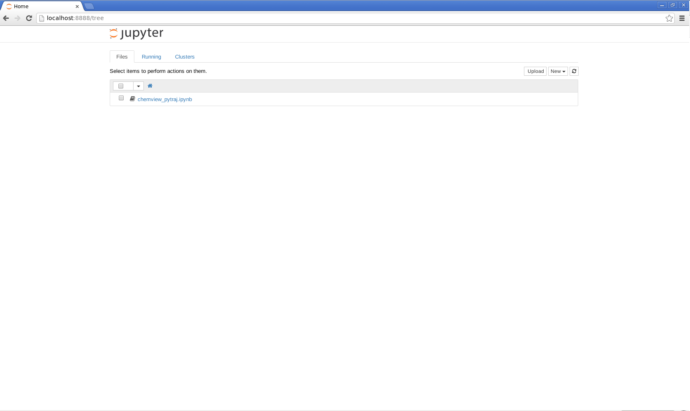
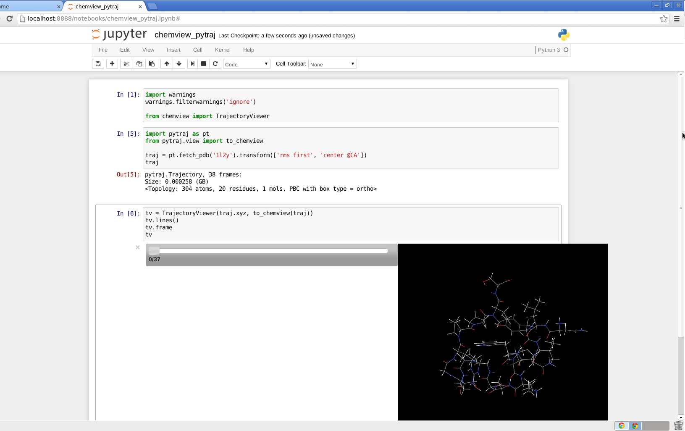

Use Jupyter notebook remotely¶
try pytraj online:
Situation: Your data (may be TB) is in your working cluster. You want to access and interactively play with your datayour home computer. You can use xwin to open your Jupyter notebook on remote host. However, this kind of connection is quite slow.
To make the connection faster, you can follow below instructions:
First, make sure you install Jupyter notebook in both remote (working station in your offcie) and local (your home computer)
In remote host, open the terminal, change directory to where you have your notebooks and type:
jupyter notebook --no-browser --port=8889 # you should leave the this open
In your local computer, open MS-DOS cmd (if using Windows) or Unix terminal, then type:
ssh -N -f -L localhost:8888:localhost:8889 username@your_remote_host_name # make sure to change `username` to your real username in remote host # change `your_remote_host_name` to your address of your working station # Example: ssh -N -f -L localhost:8888:localhost:8889 laura@cs.rutgers.edu
Now open web browser (google chrome, firefox, ...) and type:
localhost:8888 # you will see your notebooks in your given directory
Snapshot on your home computer
{kind=link}
Try to open notebook
{kind=link}